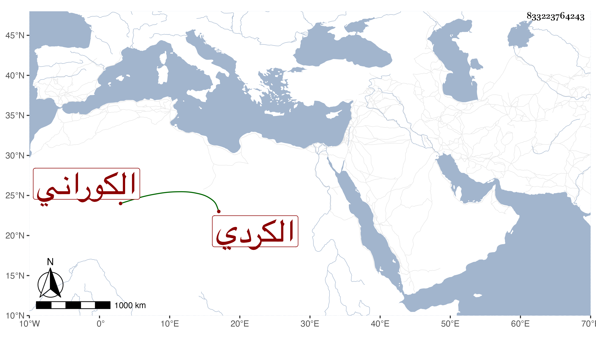

0902Sakhawi.DawLamic.ITO20230111-ara1.EIS1600.833223764243
Biography ID: 833223764243
670
فاطمة ابنة البدر محمد بن الجمال يوسف بن عبد الله بن عمر بن علي بن خضر الكردي الكوراني الاصل أم الحسن حفيدة الجمال يوسف العجمي وهي بكنيتها أشهر ، ولدت تقريبا سنة أربع وتسعين وسبعمائة وأجاز لها ابن صديق وابن قوام والبالسي وابن منيع وابنة ابن المنجا ومن أجاز لابنى عمها محمد وعلي ابنى التاج محمد وتزوجها الشمس الشطنوفى المباشر وكانت خيرة أجازت لنا . وماتت بعد زوجها المتوفي سنة ثلاث وسبعين رحمها الله .
